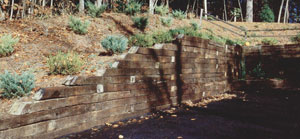
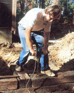
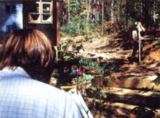
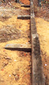
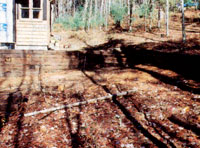
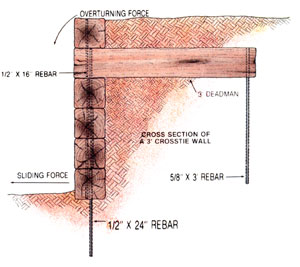

Dirt is not exempt from the law of gravity. It seeks, and in time will reach, the lowest level. But it is possible to resist its will. A retaining wall allows you to turn a useless (for landscaping purposes) slope into a terraced, flat area. And perhaps the easiest way to build such a wall is with used railroad crossties.
As you know, ties are 6" X 8" X 8' (more or less) chunks of pine, redwood, or oak treated with wood preservatives (usually creosote but sometimes also pentachlorophenol). These nasty chemicals make the difference between a few years and several decades of life span for wood that's in contact with the ground. We wish there were some economical alternative to crossties. But, at this time, inherently decay-resistant woods and lumber treated with the less toxic chromated copper arsenate cost a minimum of twice what used railroad ties run (about $8 each in our area). So, for now, we're forced to recommend crossties for this purpose, but with some reluctance and the following precautions: Never use railroad ties near edible plants or in areas where children play, never burn the trimmings from these treated timbers, and always wear gloves when handling them.
You don't have to search far to find an example of a wall where someone underestimated or misunderstood the forces that soil can exert. Tilted, bulging, or tipped retaining walls can be found just about anywhere there are hills and construction. In some cases, designing a sound retaining wall can become a very complex task-one definitely best left to an engineer. But we can simplify the job if your situation allows you to follow several guidelines: [1] The ground at the top of the wall should be approximately level for a distance equal to at least 1-1/2 times the wall's height; [2] most of the runof uphill from the wall should be routed away from the wall; [3] the fill behind the wall shouldn't consist of expansive clay; [4] the wall should rest on hardpan, rock, or thoroughly consolidated fill; and [5] the wall should be no more than six feet high.
On its own, a crosstie wall doesn't usually have enough strength to resist the slipping and overturning forces exerted by the weight of the retained earth. For a two-course wall, the weight of the ties themselves is sufficient to resist these forces, as long as they're spiked together (and into undisturbed soil) with 1/2" X 18" reinforcing rod every four feet. But as further courses are added, members running perpendicular to the wall and back into the fill (commonly called deadmen) are needed to keep the wall upright. (For example, the overturning force on a six-foot wall is equal to more than 10 times the weight of the ties themselves.)
Deadmen should be at least 1-1/2 times as long as the wall is high at the level where they're inserted. This allows them to penetrate beyond the soil that's actually bearing on the wall. Place them on eight-foot centers in every other course, starting with the second (unless there are only two) and staggering the courses so the deadmen don't end up on top of each other. Deadmen should be placed in alternating levels up to, but not including, the top.
A perpendicular member adds the weight of soil bearing down on it to that of the wall to aid in resisting overturning. Above three feet, however, sliding forces must also be considered. In such cases, a T should be added to the end of each deadman to prevent it from simply sliding through the soil. We pound a piece of 5/8" reinforcing rod through a hole in the end of the deadman and down into undisturbed soil (the length varies, depending on the excavation and the wall height), but a notched-in section of pressure-treated 4 X 4 would also work.
If the ground you'll be building the wall on is perfectly level, and if the exact height isn't crucial, you'll be able to guesstimate the number of courses needed using a tape measure. Otherwise, a builder's level is the appropriate tool. Borrow or rent one, assemble it and level the base, and find a friend to handle the rod for you. Have him or her place the rod in what looks like a low point. Then look through the telescope and note the position of the crosshairs on the rod. If, at other locations, the number you see is higher, you've found a lower spot. This will be where the first course goes. You might be tempted to fill in the low spots to avoid having to lay in extra courses, but this would seriously compromise the strength of the wall; it's much better to start on undisturbed soil.
From the base, proceed upward in 6" increments on the rod, noting where the ends of the wall will be at each height until you reach the top. Using this technique, you can determine just how many ties you'll need. Add in the extras for deadmen and another 10% for waste, and you're ready to place an order that won't leave you either short or stuck with a big pile of extra ties. If you order 30 or more, the supplier will probably throw in delivery; if not, remember that crossties weigh about 100 pounds apiece.
When the ties arrive, sort through them and set aside any that are deteriorated or warped. You'll use these for deadmen and short sections. A warped timber, in particular, will play havoc with your level if used in the wall itself. Cut short or used as a deadman, however, it will work just fine.
With any luck, the experience of laying out the wall with the builder's level has fooled your assistant into believing that this job's worst aspect is boredom. Now it's time to find out otherwise.
Lay the first timber at the low spot, and set a four-foot carpenter's level on it. Then roll the tie back out of the way, and use a mattock and shovel to level of the eight-foot area. Once the timber's set, bore 1/2" holes through it about six inches from each end with a 12"-long bit and 1/2" drill (or bit and brace if you're patient and healthy), and drive a 24" length of 1/2" reinforcing steel through each hole into the ground. (Ask your building-material supplier to cut the rod for you, if possible. You'll need two 24" rods for each base timber, two 16" ones for each tie in the subsequent courses, one 16" rod for each deadman, and longer pieces of 5/8" rod for the ends of any deadmen above the three-foot level. Cutting all that steel with a hacksaw would be tedious, at best.)
Proceed with the base course in the same fashion, but when it's necessary to step upward, remember that you're effectively starting the second course on the previous timber. Overlap the timbers by half their length, but allow for the 8" width of a deadman. On the second course and above, use 16"-long rebars to spike the timbers together.
As the wall rises, stagger the ends of timbers so that neither joints nor deadmen end up on top of each other. A two-foot stagger, for example, would provide an interesting pattern and would separate the joints by about eight courses. A chain saw with a freshly sharpened chain is the best tool for cutting the timbers.
Each time you arrive at the location for a deadman, shovel dirt in under the site and tamp it. Otherwise, backfilling can wait until the wall is to full height. However, when you finally do place the earth behind the wall, do so in two-foot layers, packing down the soil before adding the next layer.
A crosstie retaining wall that's built using these techniques, and according to the guidelines we mentioned, should last several decades. For taller walls, or in other situations where there will be greater than normal stress (where vehicles will be parked, or buildings located, within a distance equal to 1-1/2 times the wall's height), consider using a steel-reinforced concrete or block wall with a footing. You could also consider terracing to achieve full height by building a six-foot wall, stepping back nine feet, and building another. But in any case, do remember that "what goes up must come down" . . . eventually.
|
 MOTHER EARTH NEWS STAFF The finished product: an effective, attractive crosstie retaining wall. |
 |
 |
|
 |
 |
 |